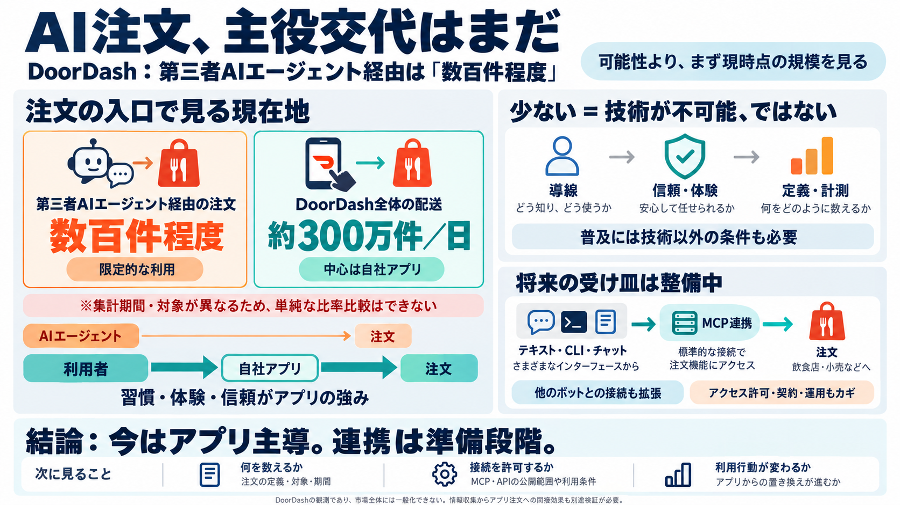

DoorDash CEO: Only 'Several Hundred' Orders So Far From AI Agents | AI Weekly
## TL;DR DoorDash CEO Tony Xu told the Q3 2026 call that third-party AI agents including Muse, Instinct and Fo have pl…

商取引はまだ移っていない
DoorDashは決算説明で、第三者のAIエージェント経由の注文が現時点では「数百件程度」と明かしました。派手な「乗っ取り」論より、まずは計測された規模が土台になります。
懸念の中心
AIエージェントがEC/デリバリーの「注文」まで自動実行すると、人間の導線が置き換わるのでは—という強い議論があります。では実際、注文のどれくらいがエージェント経由になっているのでしょうか。
計測が必要
理解の鍵は「エージェント経由」と「自社アプリ経由」を分けて見ることです。さらに企業が“どのアクセス”を許可し、どう連携するかも結果を左右します。
決算での数字
DoorDashによると、第三者AIエージェント（例：Muse、Instinct、Foなど）経由の注文は「数百件程度」。一方、同社は1日平均300万件規模の配送を完了しています。
出典文脈：2026年第3四半期earnings callでの言及（複数報道でも同旨）。
主役はまだアプリ
CEO Tony Xuは技術の方向性を否定せずつつも、現状は「幻想（delusional）」にならないよう現実を見ていると述べています。ユーザーの中心は依然、DoorDashアプリからの注文です。
連携の器
DoorDashは自社側で、テキスト/CLI/チャット（写真やプロンプト含む）など複数の注文手段を用意しています。加えてMCP（Model Context Protocol）で、他のチャットボットから注文できる形も進めています。
同じ“連携”でも別の対応
エージェント時代の企業対応は一枚岩ではありません。報道ベースでは、Amazonはブロックし、Walmartは歓迎する対比が語られています。
理由は記事内で詳細不明だが、アクセス権・収益配分・契約/法務・リスクが関わる領域。
普及を左右する要因
“数百件”の意味
数字が小さいことは「技術が無理」を直接意味しません。むしろ、導線・連携・定義・計測・許可が揃う前の“段階差”を示します。
“完全置換”は早い
エージェントは将来“注文”に近づき得ますが、今回の入力データは「すでに主流を奪った」という主張を否定的に扱っています。少なくともDoorDashの観測範囲ではギャップが残っています。
見方の骨格
今回の強みは、センセーショナルな議論を“現場の規模感”へ戻している点です。一方で、定義や計測範囲など不明点も残ります。
残る“未確定”
「数百件」という数字だけで未来を断定するのは危険です。少なくとも次の不明点が、解釈を揺らします。
結論（短く）
現時点でのDoorDash観測では、第三者AIエージェント経由の注文は主流から遠い（数百件規模）。一方で、自社エージェントやMCP連携など「将来の受け皿」はすでに仕込みが進んでいます。
次に見るべきは、定義・計測・許可（アクセス）・ユーザー行動の変化です。
参照
入力データおよび参照情報は、DoorDashのearnings callでの発言（第三者AIエージェント経由の注文が「数百件程度」）を報じた複数メディアの内容に基づきます。
※本デッキは提供された要約テキストを圧縮して構成しています。
## TL;DR DoorDash CEO Tony Xu told the Q3 2026 call that third-party AI agents including Muse, Instinct and Fo have pl…
The company is also working on an MCP to facilitate ordering from other chatbots for corporate use. Xu emphasized the im…
In a third-quarter earnings call Thursday, DoorDash co-founder and CEO Tony Xu responded to an analyst question by notin…
AI agents placed only several hundred DoorDash orders since launch. DoorDash processes about 3 million deliveries daily,…
AI Amazon Apps Biotech & Health Climate Cloud Computing Commerce Crypto Enterprise EVs Fintech Fundraising G…